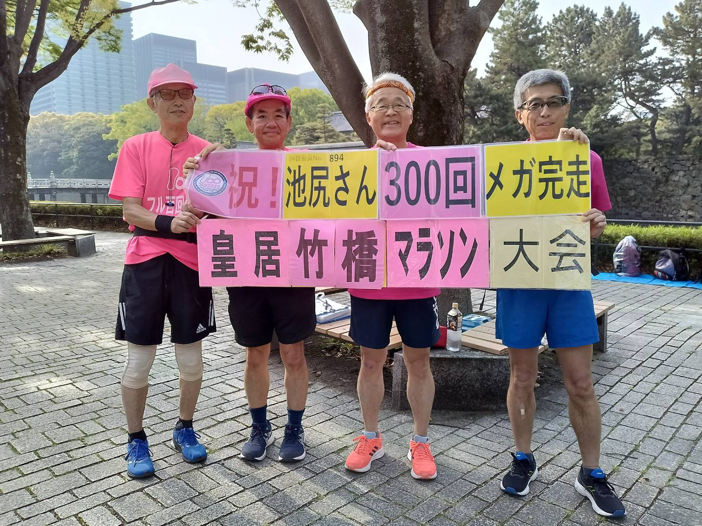
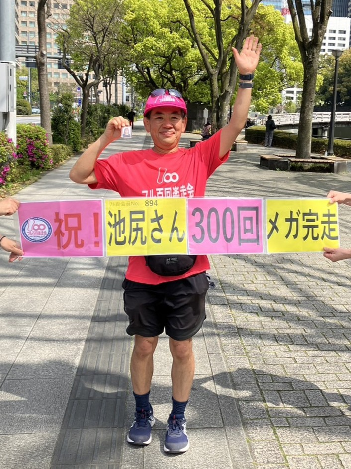

2025-04-19 04:52:08
2025年(令和7年）4月19日（土）晴れ17～27℃
| 順位 | 会員番号 | 氏名 | 種目 | タイム |
|---|---|---|---|---|
| 1 | 273 | 福井康太 | フル | 4:08:22 |
| 2 | 119 | 山口義治 | フル | 5:34:37 |
| 3 | 129 | 中家和宏 | フル | 6:01:21 |
| 4 | 258 | 池尻 彰 | フル | 6:03:35 |
| 5 | 066 | 大野清美 | フル | 8:17:45 |
| 6 | 044 | 田中国貞 | フル | 8:30:33 |
| 7 | 105 | 宮野 繁 | 32km | 7:08:50 |
| 8 | 166 | 山口真澄 | 15km | 2:50:00 |
| 9 | ? | 島田八十美 | 15km | 2:31:34 |
| 10 | 013 | 住川万里子 | 10km | 2:00:00 |
池尻さんから讃岐”和三盆パイ”の差入有。マラソン終了後池尻さんのメガ３００回完走祝賀会を開催。

